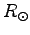
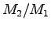

| PHOEBE keyword | Type | Short description |
HJD0 |
adjustable | Zero epoch time in HJD |
PERIOD |
adjustable | Pperiod value in days |
DPDT |
adjustable | Period time derivative |
PSHIFT |
adjustable | Phase shift |
SMA |
adjustable | Semi-major axis in  |
RM |
adjustable | Mass ratio () |
INCL |
adjustable | System inclination in degrees |
VGA |
adjustable | Systemic radial velocity |